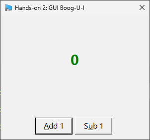

4: Basic GUIs
This script will be very straightforward, but building GUI elements out can take some patience. Manual tweaking will need to happen and we'll have to come up with clever(ish) equations to have perfect placement. In this tutorial, we'll build a GUI for a basic click-coutner application, learn how to assign logic to buttons, and touch on dynamically updating GUI elements that are already loaded. Let's get to it!
I hope you like doing math! Just kidding (sorta) - PowerShell will thankfully do the actual math part, we just need to figure out placement. Fortunately for you, I've learned some tricks on lining up elements that I'll be sharing today that will hopefully give you a shortcut to successfully building feature-rich applications from PowerShell scripts.
To begin, let's open up a clean file in your preferred editor (I'll be using Visual Studio Code and will be supplying some hints for managing large blocks of code using it), and enter the following at the very top:
I know, it doesn't really seem like we're jumping in the deep end but it's important to understand what is happening here. The Add-Type command in a PowerShell script is much more powerful than we'll address today, but for now what you really need to understand is that PowerShell can interact with .NET Framework (y'know, that thing we have to reinstall on client PCs all the time) in order to build applications. A lot of what we do here translates surprisingly well to C# programming because of this. We are simply letting PowerShell know that we are going to be building what's called a Windows Form, the most basic available GUI for Windows.
Moving on, let's add this below that:
These are simply some elements that we'll be changing later on - you'll see us refer to them a few times in the upcoming code. As of now, we still do not have a functional script, so let's keep going and add on a bit more. The $counter variable will be changed the most - we are going to add and subtract from it.
In Visual Studio Code, we can use regions to define a collapsible area so that when we have giant code blocks, we can simply squish away what we're not using at the moment.
Start a region by adding #region RegionName and end it with #endregion RegionName - once these are added, you'll see little arrows to the left of your #region tag that will collapse that code block entirely. When you are dealing with large code blocks, you will want to use this.
I've included comments in the code up above to give some basic explanations, but there are 2 things in particular I want to make note of.
form is the window that every other element will be pinned to. You can have multiple forms in one script (like the splash screens you see in the Evaluation and Copy scripts we use currently), but in this example we will be sticking to one main form.ClientSize rather than what you will mostly find in code examples online, Size. The reason why is that ClientSize controls the actual usable portion of the window, without the window decorations and borders. Aside from simply being more accurate, it will also come in handy later on (not in this tutorial) when we set DPI scaling, as window contents are sometimes scaled much differently than title bars.
When you are creating a selectable element in a Windows form, you can assign keyboard shortcuts by putting an ampersand (&) character before a letter anywhere in the objects Text element. You can activate these hotkeys by pressing Alt + ActionKey.
In our example here, pressing Alt + A will activate the Add button, and Alt + U will activate the Sub button. This doesn't do anything now, but we'll be adding logic later to make these buttons functional.
We have two new element types we're adding here. A label element just contains text. Most of the variables we set at the top of our code are being used right here. Our buttons are straightforward for now - they don't have any logic attached to them, so they're just lifeless little guys. Now we get to move on to the most fun part of PowerShell GUI - using math to place elements on the form.
If you've been paying attention, you might have noticed that we have set the size on a lot of these elements, but we haven't set any locations. It is my experience that setting layout works best when we have sizes set already - that way we can calculate placement of elements based on the size of the form and the elements inside of it. It's not as complicated as it sounds, though, and since PowerShell is pretty fast, it's pretty easy to adjust things via trial and error.
So, let's get down to it and start placing our elements on the form. Add the following code to the end of what you currently have:
It's a good habit to keep math inside of parantheses inside of PowerShell scripts. Many elements of PowerShell do not support math, but placing them inside of parantheses will trigger the shell itself to do the math.
I really do promise it's not as bad as it looks! $labelCountX will be used to place the label element we created earlier on the x-axis, that is, the horizontal plane (left-to-right). $labelCountY is for the y-axis. We also do the same for the buttons. Let's break it down:
$labelCountX = (($formClicker.ClientSize.Width - $labelCount.Width)/2) - We are taking the Width of the form, subtracting the Width of the label, and then halving it. This should perfectly center the element on the x-axis.$labelCountY = (($formClicker.ClientSize.Height - $labelCount.Height)/2 - $buttonAdd.Height) - we are doing much the same here, but we are also taking into account the Height of the butotn elements. Since the buttons are the same size, we don't need to do any extra calcuations for the other button to center things.$buttonAddX =(($formClicker.ClientSize.Width - $buttonAdd.Width - $buttonSub.Width)/2 - 5), $buttonSubX = ($buttonAddX + $buttonAdd.Width + 5) - these two are doing the same as the label, just taking each other's Width into account.$buttonY = ($formClicker.ClientSize.Height - $buttonAdd.Height - 10) - since the buttons will be side-by-side, they'll share a y-axis location.System.Drawing.Point($X,$Y) (this is one of the many .NET Framework elements we are dealing with) to set their placement.
At this point, we can actually fire up our script and see what we've got! Add the following line temporarily to see the GUI. The buttons do not work, so we'll want to remove this element before we start adding more logic.
Once you run that, you should see our interface.
Fancy, huh? Now go ahead and close that window and remove the line you just added. Next, we are going to add some logic to those buttons!
Let's add the following code to the bottom of our file. The $formClicker.ShowDialog() line is temporary, we only want to open the dialog for testing currently.
$script: mean? Isn't the variable just $counter?
The Add_Click() class is an event handler, which are handled in a separate process from the main script. If we were to simply use $counter++ instead of $script:counter++, the handler would generate an entirely new $counter variable, usable only inside of the event handler.
To address that, we use what's called a scope. For our purposes, we will mainly only use the $script: scope as we move on, but you can look into $global:, $local:, and $private: scopes, as well.
Now if you click on our buttons, you'll see some output in your console. We are successfully updating the $counter variable! You should see some output like this:
Our debugging output is showing that we are defintiely updating our variable without any issues and our hard-tops for the minimum and maximum values are working. However, you'll notice that the GUI isn't updating. We need to change the Text property on our label. Just temporarily, let's modify our button logic by adding some very basic updates. Replace what you have currently with this.
Now when you open your script, you'll find that the buttons DO in fact change the value on the screen! You'll also see that once you get into double- and triple-digit numbers, the text is no longer centered. I'd also like to have a way to tell at a glance how large the numbers are, so we are going to add some additional logic to update the placement of the label as well as the size and color of the text on the label. To do that, we're going to need a new function, which we'll call Update-Counter. Let's finalize our button logic by replacing what we currently have with the following, and then we'll move on to creating the actual function.
Here's where the program will really come alive. We're going to add dynamic updates that will increase or decrease the font size and change font color, all while keeping everything exactly where we expect it to be. Let's add this directly after your button logic section, then we'll go over what's happening here:
Now we can go section by section and go over what we've created.
$labelCount.Text update into our function.if statement that checks the value of the $script:counter variable using a -ge(greater than) check. At certain set values, it will change the color and also the font size, which will necessitate re-doing the math for label placement, since it will not be on the form based on the old calcuations whenever the font size changes or the number of characters changes.And let's take a look upon our works: